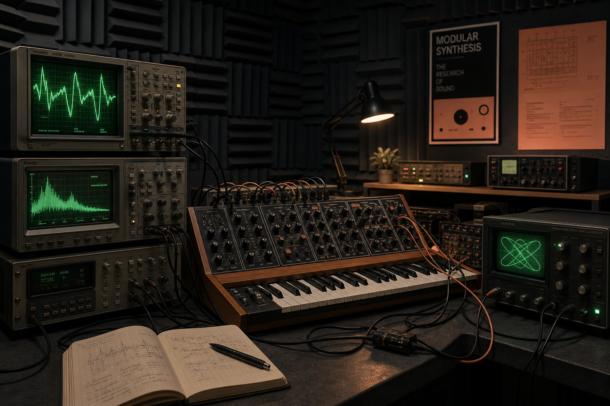

Juno-style chorus response
Gear under test: Chorus Ensemble CE-2. Pink noise sweep, calibrated at -18 dBFS. Download raw CSV

Frequency response, distortion, latency, and filter behavior captured with repeatable methodology.
Gear under test: Chorus Ensemble CE-2. Pink noise sweep, calibrated at -18 dBFS. Download raw CSV
Gear under test: Model D clone. Filter opened over MIDI CV ramp with resonance held at 75%. Download raw WAV
Signal flow, gain staging, calibration, and why every result includes listening notes.
| Instrument | Noise Floor | THD | Latency | Filter Peak |
|---|---|---|---|---|
| Juno-60 | -78 dBu | 0.42% | 3.1 ms | 11.8 kHz |
| MS-20 | -70 dBu | 0.88% | 2.7 ms | 9.4 kHz |
| TR-808 | -74 dBu | 0.51% | 1.8 ms | 14.2 kHz |
| SH-101 | -81 dBu | 0.35% | 2.2 ms | 12.5 kHz |
| OB-Xa | -76 dBu | 0.61% | 4.0 ms | 10.9 kHz |